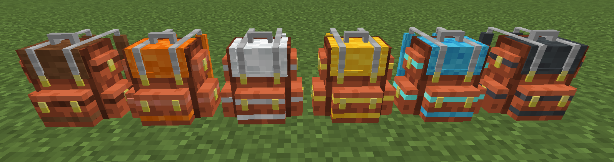
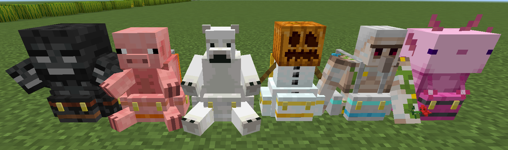
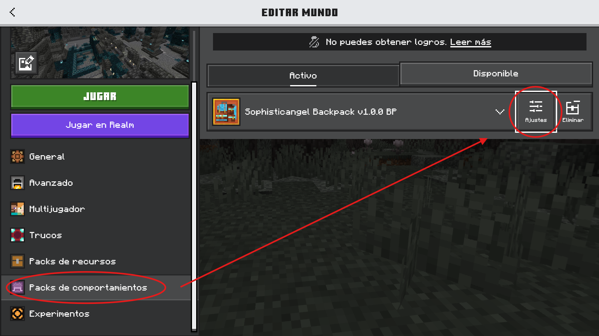

Sophisticangel backpack
By Angeldfire2 | v1.0.0


New Update v1.0.0:
◠Se solucionó un problema que causaba lag en los mundos después de un tiempo predeterminado de uso. Ahora esto ya no sucede.
● Se solucionó el problema al mejorar la mochila, en el cual se perdÃan los Ãtems almacenados. Ahora es necesario un yunque y un chip de mejora.
◠Se agregó la opción de colocar las mochilas en el suelo, asà como también son compatibles con la tolva.
● Se agregó una variedad de skins personalizadas para la mochila, que incluyen desde skins de mobs hasta algunas que se añadieron como memes. Cabe recalcar que también se agregó la opción de teñir la mochila.
● Se agregó un nuevo aditamento que permite almacenar mochilas y shulkers dentro de la misma.
◠Se retiró el aditamento del hacha (muchos lo relacionaron con el Tree Capitator).
◠Se agregó el aditamento "Force", el cual otorga más fuerza al jugador.
◠Se mejoró el sistema de obtención de los discos personalizados, los cuales estarán disponibles en los loot del mundo, como aldeas, templos del desierto, etc. Las skins también se obtienen de igual manera.
◠Ahora la jukebox portátil es compatible con los discos de vanilla, además de que se mejoró su interfaz para mayor comodidad.
● Se añadieron más idiomas para respetar la experiencia de los jugadores de otros paÃses. Esto es configurable en el Behavior Pack.
ğ’ğ¨ğ©ğ¡ğ¢ğ¬ğğ¢ğœğšğ§ğ ğğ¥ 𝐁𝐚𝐜𝐤𝐩𝐚𝐜𝐤
¡Resuelva la falta de espacio en el inventario con nuevas mochilas mejoradas! Este complemento agrega al juego mochilas de cuero, cobre, hierro, oro, diamantes y netherite, cada una con más capacidad que la anterior. Además, estas mochilas se pueden personalizar y mejorar equipándolas con diversos accesorios. Diseñado para abordar uno de los problemas más comunes en Minecraft Bedrock, la falta de espacio en el inventario, este complemento es la solución perfecta para quienes aman explorar y coleccionar sin lÃmites. ¡Lleva tu aventura al siguiente nivel y nunca más te quedes sin espacio!
👾 ⋄ —〈 Sophisticangel Backpack 〉— ⋄ 👾
Este es un complemento creado por @angeldfire2 con la ayuda de Angel's Community y algo de cooperación de los miembros de DarkBasementStudio. El complemento se basa esencialmente en el mod Java Sophisticated Backpacks creado por @P3pp3rF1y. Un agradecimiento especial para ellos por permitir el lanzamiento de este complemento.

Creador
Angeldfire2
Agradecimiento especial por la ayuda:
DarkbasementStudio
ꗃ⋆ ࣪ .Developer.‹𝟥
SenyuGamer
Manolo394
Angel's Comunity
EL RISAS XD
!ThekarTez
St4r crack
crissafio el mismÃsimo
JebusArt
Obed Millan
SirDrogas
👾 ⋄ —〈 Content 〉— ⋄ 👾
El addon Incluye:
Backpacks
● Leather Backpack
● Copper Backpack
● Iron Backpack
● Gold Backpack
● Diamond Backpack
● Netherite Backpack
Aditaments
● Portable Farming
● Auto Food
● Portable Furnace lvl 1 and lvl 2
● Portable Jukebox
● Extra Hearts
● Auto Tree Felling
● Item Magnet lvl 1 and lvl 2
● Mining Speed
● Dynamic Torch
● Auto Transfer Items
● Aquatic Breathing
● Container Liquid
Discos de música para la mochila
Backpack Skins
● AmongUs
● Ajolote
● Iron Golem
● Snow Golem
● Jaar
● Manolo
● Nutria
● Bear
● Pig
● Rappi
● Warden
● Wither
● Fox
● Custom Colors

👾 ⋄ —〈 Aditaments 〉— ⋄ 👾
Portable Farming
Cuando está equipado, este accesorio agrega 3 ranuras a la mochila para semillas, que se plantan automáticamente cuando caminas sobre tierra cultivada.
Auto Food
Cuando está equipado, este accesorio permite al jugador almacenar comida en la mochila, y se consumirá automáticamente cuando el jugador tenga poca salud.
Portable Furnace
Cuando está equipado, este accesorio agrega un horno que se puede llevar a cualquier lugar, lo que le permite cocinar directamente desde la mochila.
Portable Furnace Level 2
Cuando está equipado, este accesorio agrega un horno con 4 ranuras adicionales para combustible.
Portable Jukebox
Cuando está equipado, este accesorio agrega un reproductor de música portátil que solo puede reproducir discos especÃficos para la mochila. (El sonido es individual para cada reproductor).
Extra Hearts
Cuando está equipado, este accesorio le otorga al jugador 4 corazones de salud adicionales.
Item Magnet
Cuando está equipado, este accesorio atrae objetos hacia el jugador dentro de un radio de 6 bloques.
Item Magnet Level 2
Cuando está equipado, agrega un filtro de objetos que atrae solo objetos filtrados dentro de un radio de 6 bloques a la mochila.
Mining Speed
Cuando está equipado, este accesorio le otorga al jugador el efecto Velocidad de minerÃa IV.
Dynamic Torch
Cuando está equipado, este accesorio emite luz alrededor del jugador.
Auto Transfer Items
Cuando está equipado, este accesorio almacena automáticamente elementos del suelo en la mochila si el inventario del jugador está lleno.
Aquatic Breathing
Cuando está equipado, este accesorio le otorga al jugador la capacidad de respirar bajo el agua.
Container Liquid
Cuando está equipado, este accesorio le agrega a la mochila dos contenedores de liquidos (agua y lava)